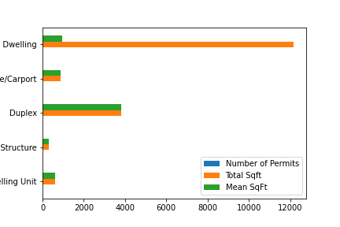

Access to the full dataset is available for purchase. Send an email to zephyr.schafer@gmail.com to request
On Wednesday, Feb 23, 2022, the City of Portland issued permits for 18.1K new square footage of development.
That's 441.1% of the average for a Wednesday for the past 365 days.
(Over the past year, the City has averaged 32.7K permits per day and 79.8K permits per Wednesday
There were 44 permits with square footage, a mean of 403, a median of 0.
The greatest amount of square footage was 5,130, the smallest amount of square footage came from 0
The graph below shows the breakdown of square footage by use type.

The table below shows the permits issued yesterday